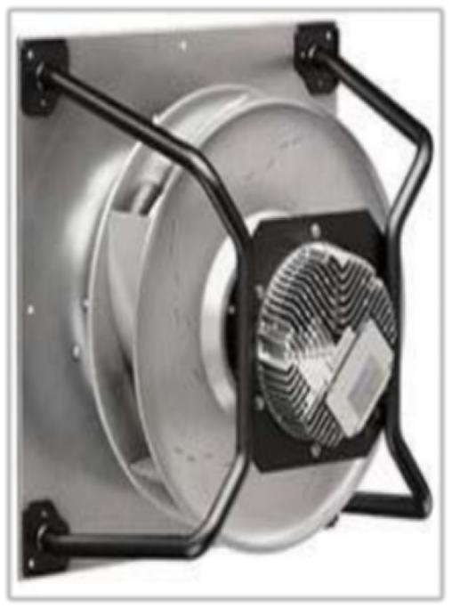

投资回收期由哪几个数字决定
节能改造的投资回收期，通常等于项目总投资除以年度节约费用。年度节约费用又由三个口径决定：改造前后的能耗差、对应的能源单价，以及设备实际运行时间。三者任何一个取值不同，结果都会明显变化。
因此在比较两个项目时，先看口径是否一致，再看结论。只给出回收期数字而不说明计算条件，参考价值有限。

节能量要怎么核算
节能量一般通过改造前后同一工况下的运行参数对比得出。以风机系统为例，需要记录频率、控制电压、功率与余压等参数，再按相同工况对比用电水平。现场测试通常由专业团队完成，并形成可复核的数据记录。
设备选型也会影响结果。一体式直联风机集成定制变频器、高效永磁同步电机与双曲面机翼型风叶，较传统皮带风机节能 30% 以上，相对旧风机的节能幅度为 35%—50%；组合式空调器末端静压效率可由约 40% 提升至 68%，冷却塔风机由传统 29% 提升至 54%。
案例：深圳某半导体有限公司
该企业实施节能风机技改后，风机节能率平均 39.3%，整体运行成本降低 25% 以上，投资成本在 19 个月内收回。需要说明的是，这一周期与该机组的数量、年运行小时数及当地电价相关，其他企业需按自身工况重新测算。

测算时容易忽略的两点
一是运行时间。设备长期连续运行的场景，回收期往往短于间歇运行的场景。二是维护成本。免维护设计减少的备件与人工支出，也应计入综合效益，而不只看电费差异。
如需按自身工况测算，可提供服务电话 0769-22996692，或通过微信扫描页面二维码交流用能现状与改造需求。